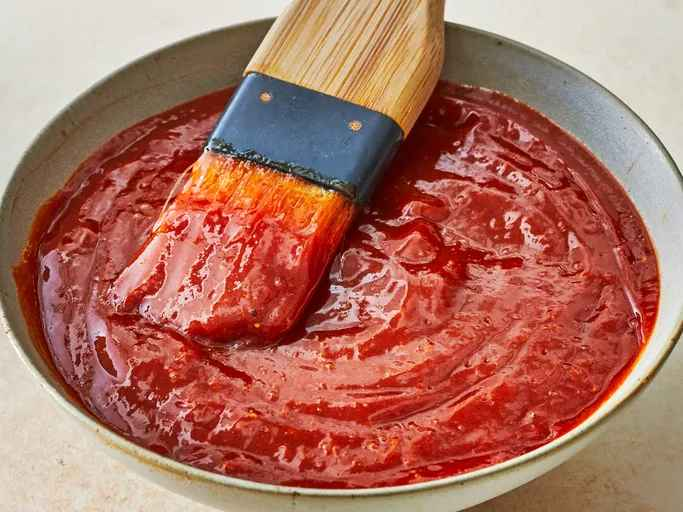

Barbecue Sauce

The perfect condiment
This barbecue sauce will convince even the most flavor-skeptical among us to love spice.
Before I realized what "toxic masculinity" was, I was under the impression that "manliness" was a list of things men all needed. On that list were things like "All men need to grow a beard" and "Men like utilitiarian decor."
The whole list was stupid, childish, and immature. Like toxic masculinity!
There was one exception: I believed then, and continue to believe that everyone needs to have a special recipe. Something to break out at parties to get people talking. This is mine.
I developed this recipe because I noticed that there are basically 3 types of barbecue sauce available at the store: Smoky, Honey, and Whiskey. But I like all three. So this recipe has all three!
What do you need to make this incredible condiment?
- 1/2 cup Worcestershire sauce (Wash-your-sister sauce)
- 1/2 cup water
- A splash of soy sauce
- 1 tablespoon honey
- 2 tablespoons brown sugar
- 1/2 small can tomato paste
- a pinch of salt
- 1 tablespoon garlic (rounded. There is no such thing as "too much")
- 1/2 tsp onion powder (or 1/2 a small onion)
- a dash of cayenne pepper
- a dash of mustard powder
- 1/2 shot of whiskey (or 1 shot if you're not a coward)
- a pinch of pepper
- a splash of liquid smoke
You thought I was done? We still have the icing to make!
That's right, fucker; buckle up!
- 2 cups confectioners' sugar
- 3 tablespoons milk
- 1 tablespoon melted butter
- 1 teaspoon vanilla extract
Directions
- Preheat the oven to 350 degrees F (175 degrees C). Grease two cookie sheets. Or put some parchment paper down.
- Get your favorite mixing bowl. Combine flour, cinnamon, baking powder, baking soda, nutmeg, cloves, and salt in said bowl.
- Cream together sugar and butter in a mixing bowl until fluffy, 2 to 3 minutes. Add pumpkin, egg, and vanilla; beat until creamy. Mix in flour mixture until combined. Drop tablespoonfuls of dough onto the prepared cookie sheets; flatten slightly.
- Bake in the preheated oven until centers are set, 15 to 20 minutes, switching racks halfway through. Transfer cookies to a wire rack to cool to room temperature, about 30 minutes. Resist the urge to eat them too early.
- Distract yourself from the overwhelming impulse to just eat them like little spice cakes by making the icing. Grab your second favorite mixing bowl.
- Melt the butter in the bowl.Use the microwave for like 20-30 seconds.
- Combine the confectioners sugar, milk, vanilla, and butter.
- Take a second to giggle to yourself because this icing looks like something else. Then get your mind out of the gutter, pervert.
- Do the courteous thing and put a towel down under the cookies.
- Bukkake the cookies with the icing.
- NOW eat the best fucking fall cookies you'll ever eat in your life.
Nutrition Information
HAHAHAHAHAHAHAHAHAHAHAHAHAHAHAHAHAHAHAHAHAHAHA
Original Recipe